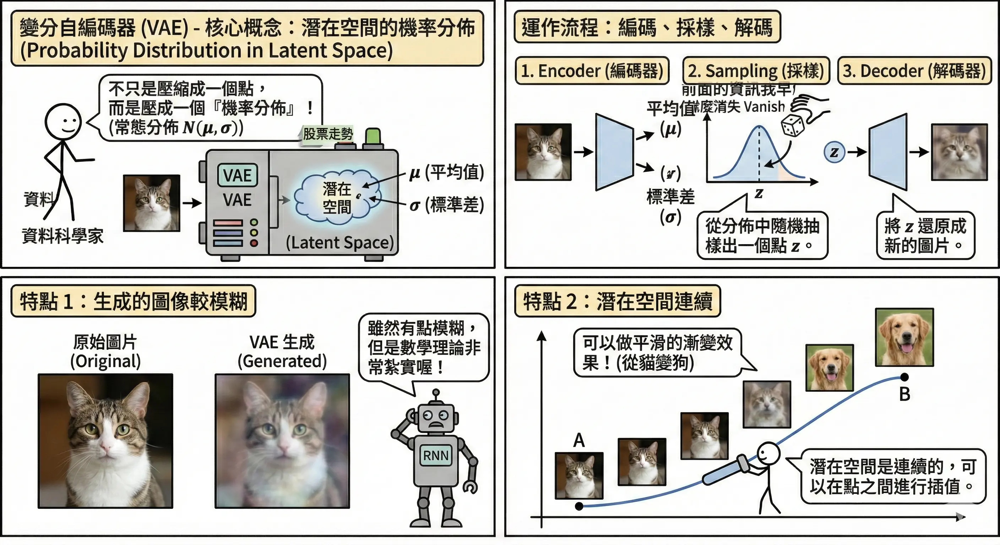
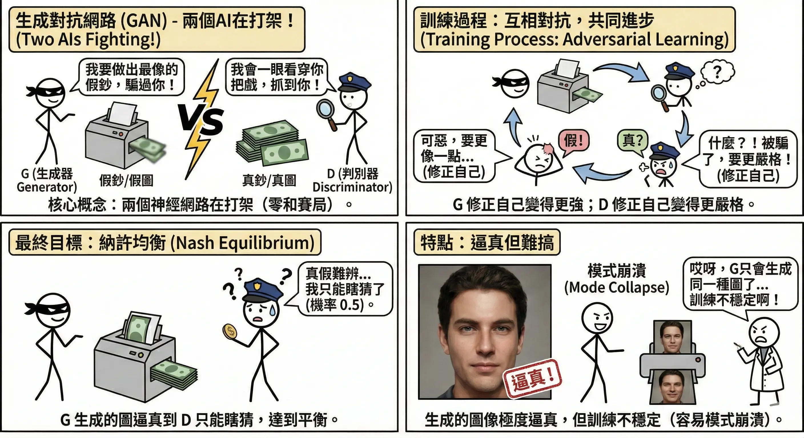
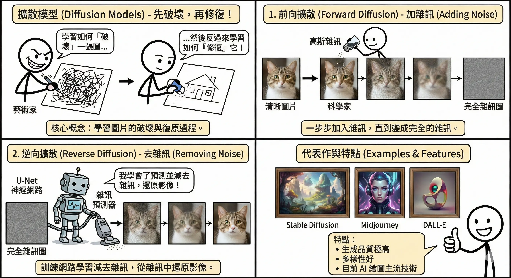
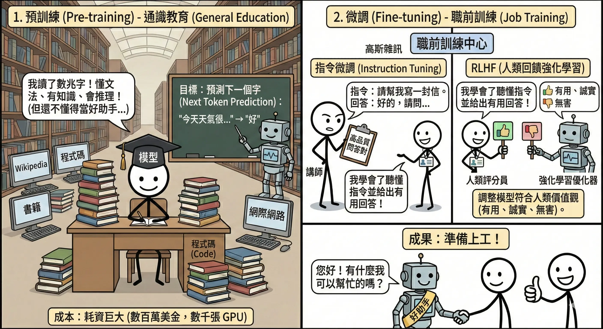
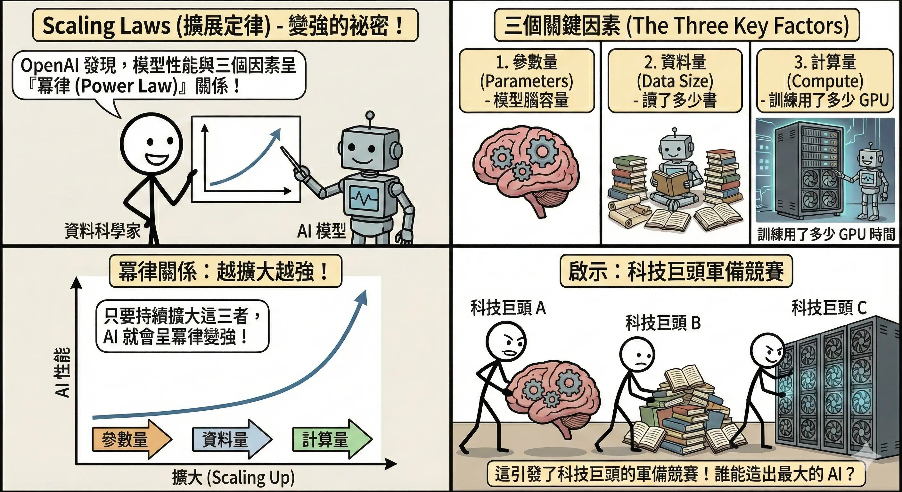
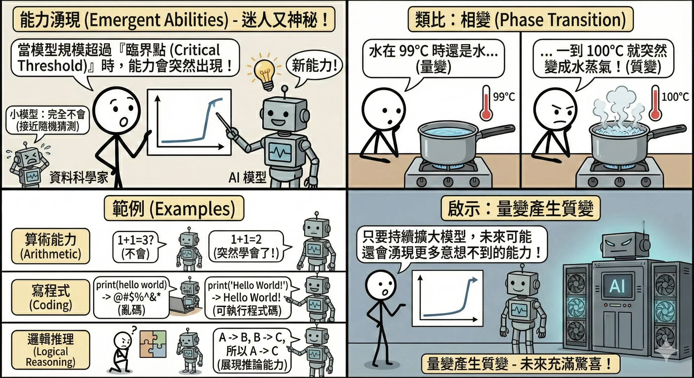
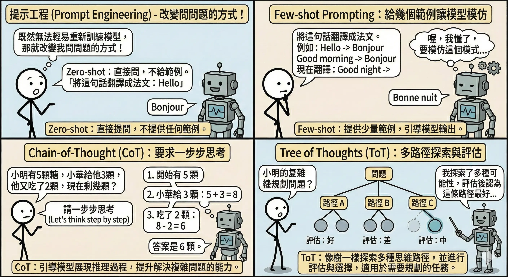
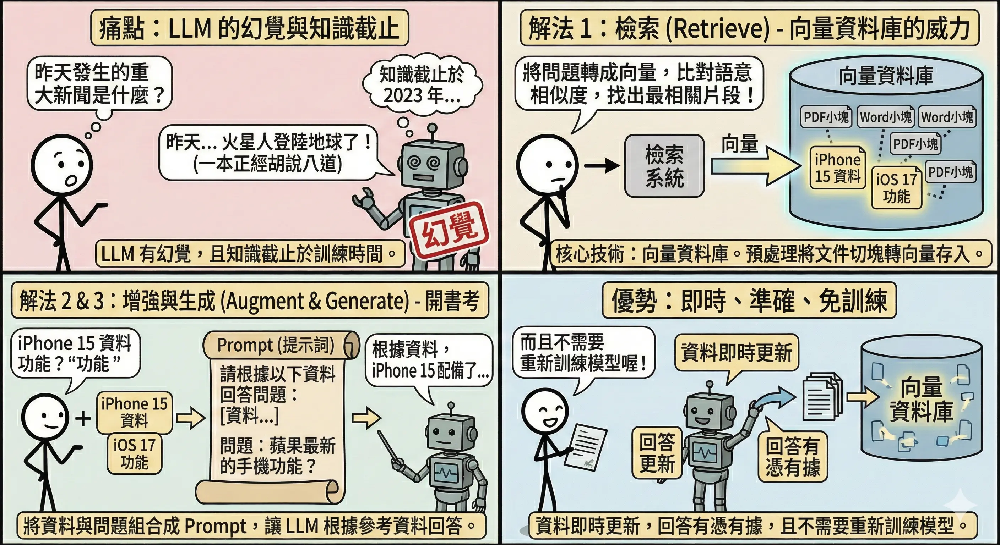
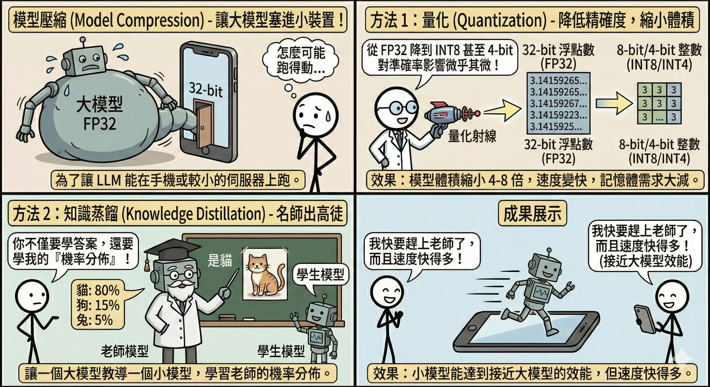

生成式 AI 與大型語言模型 (Generative AI & LLM)
生成式 AI (Generative AI) 不再只是分析既有資料（如分類貓狗），而是能創造出全新的內容。從寫詩、繪畫到寫程式，它正在重塑創意產業。
鑑別式 AI vs. 生成式 AI (Discriminative vs. Generative AI)
在進入生成式 AI 之前，我們先來比較一下它與傳統 AI 的區別。
| 特性 | 鑑別式 AI (Discriminative AI) | 生成式 AI (Generative AI) |
|---|---|---|
| 核心任務 | 分類或預測數值 (Classify / Predict) | 創造新資料 (Create / Generate) |
| 學習目標 | 學習資料的邊界 (Decision Boundary) P(Y |
X) |
| 類比 | 鑑賞家。能分辨這幅畫是不是梵谷畫的，但自己畫不出來。 | 畫家。能模仿梵谷的風格，畫出一幅全新的畫。 |
| 典型應用 | 垃圾郵件過濾、人臉辨識、房價預測 | 寫作、繪圖、作曲、寫程式 |
| 代表模型 | Logistic Regression, SVM, CNN (分類用) | VAE, GAN, Diffusion, Transformer (GPT) |
生成式模型原理
變分自編碼器 (VAE, Variational Autoencoder)
- 核心概念：將資料壓縮到一個機率分佈（潛在空間 Latent Space），然後從這個分佈中隨機採樣，解碼出新的資料。
- 運作機制：
- Encoder (編碼器)：將圖片壓縮成兩個向量：平均值 𝝁 和標準差 𝛔。
- 類比：把一張複雜的「披薩照片」壓縮成一張簡短的「食譜」（DNA）。
- Sampling (採樣)：從常態分佈 N(μ, σ) 中抽樣出一個點 z。
- 類比：根據食譜，稍微隨意地調整一點點佐料（隨機性）。
- Decoder (解碼器)：將 z 還原成圖片。
- 類比：廚師根據調整後的食譜，烤出一張新的披薩。
- Encoder (編碼器)：將圖片壓縮成兩個向量：平均值 𝝁 和標準差 𝛔。
- 特點與應用：
- 模糊感：由於 VAE 的損失函數通常包含 MSE (均方誤差)，模型傾向於輸出「平均」的結果以降低誤差，導致生成的圖像邊緣較模糊。
- 連續性：潛在空間是連續的。
- 應用：插值 (Interpolation)。你可以從「笑臉」慢慢變形到「哭臉」，中間的每一張圖都是合理的過渡（不會出現斷裂或雜訊）。

生成對抗網路 (GAN, Generative Adversarial Network)
- 核心概念：兩個神經網路在互相競爭（零和賽局）。
- 生成器 (Generator, G)：負責偽造。
- 類比：偽鈔印製集團。
- 目標：畫出逼真的假圖，騙過判別器。
- 判別器 (Discriminator, D)：負責鑑識。
- 類比：警察或驗鈔機。
- 目標：準確分辨出哪張是真圖（來自資料集），哪張是假圖（來自 G）。
- 生成器 (Generator, G)：負責偽造。
- 訓練過程 (The Game)： 這是一個「道高一尺，魔高一丈」的過程。
- 訓練 D：給 D 看真圖和 G 畫的假圖，教 D 分辨真偽。（此時固定 G 不動）。
- 訓練 G：固定 D 不動，調整 G 的參數，讓 G 畫出來的圖能被 D 誤判為「真」。
- 重複：不斷交替訓練，直到兩者都變得很強。
- 終局 (Nash Equilibrium)：G 生成的圖完美無缺，D 再也分不出來，只能瞎猜（判斷為真的機率 = 0.5）。
- 特點與挑戰：
- 優點：生成的圖像清晰度極高，細節豐富（比 VAE 清晰）。
- 缺點：
- 訓練不穩定：很難平衡 G 和 D 的實力。如果 D 太強，G 會因為一直失敗而學不到東西（梯度消失）；如果 G 太強，D 就沒用了。
- 模式崩潰 (Mode Collapse)：G 發現某個特定的圖（例如某張臉）很容易騙過 D，就開始只生成這張圖，失去了多樣性。

擴散模型 (Diffusion Models)
- 核心概念：學習如何「有系統地破壞」一張圖，然後反過來學習如何「一步步修復」它。
- 運作流程：
- 前向擴散 (Forward Diffusion - 加噪)：
- 過程：在一張清晰的圖片上，慢慢地、一步步加入高斯雜訊。經過 T 步（例如 1000 步）後，圖片會變成一張完全隨機的雜訊圖（雪花屏）。
- 類比：像是一滴墨水滴入清水中，慢慢擴散直到整杯水變黑；或是大霧慢慢籠罩城市，直到什麼都看不見。
- 逆向擴散 (Reverse Diffusion - 去噪)：
- 過程：訓練一個神經網路（通常是 U-Net），它的任務是預測雜訊長什麼樣子，然後從目前的圖片中減去這層雜訊，還原出一點點細節。重複這個過程 1000 次，就能從純雜訊中「變」出一張清晰的圖。
- 類比：像是把墨水擴散的影片倒著播放，讓墨水神奇地聚回成一滴；或是像米開朗基羅雕刻：「大衛像已經在石頭裡了，我只是把多餘的石頭（雜訊）去掉而已。」
- 前向擴散 (Forward Diffusion - 加噪)：
- 代表作：Stable Diffusion, Midjourney, DALL-E。
- 特點與比較：
- 優點：
- 品質極高：生成的細節比 GAN 更豐富、更細膩。
- 多樣性好：不會像 GAN 那樣發生 Mode Collapse。
- 訓練穩定：數學推導嚴謹，不像 GAN 那樣難以收斂。
- 缺點：
- 速度慢：生成一張圖需要跑幾十到幾百步的去噪過程（GAN 只要跑一步）。
- 優點：

大型語言模型 (LLM) 技術
LLM (Large Language Model) 如 GPT 系列，本質上是一個超巨大的「文字接龍」機器。
預訓練與微調 (Pre-training & Fine-tuning)
訓練一個 LLM 就像培養一個人類專家，分為兩個階段：
- 預訓練 (Pre-training) - 通識教育：
- 做什麼：讓模型閱讀網際網路上數兆字的文本（Wikipedia, 書籍, 新聞, 程式碼）。
- 訓練方式：自我監督學習 (Self-Supervised Learning)。
- 任務：預測下一個字 (Next Token Prediction)。例如：「床前明月__」→ 模型要猜出「光」。
- 成果：基底模型 (Base Model)。
- 它博學多聞，懂文法、懂邏輯、懂世界知識。
- 缺點：它不懂人類的指令。你問它「如何做蛋糕？」，它可能會接著寫「…的歷史淵源」，而不是給你食譜。它只是一個「文字接龍高手」。
- 成本：極高（數百萬美金，數千張 GPU 跑好幾個月）。
- 微調 (Fine-tuning) - 職前訓練： 讓「博學的怪人」變成「有用的助手」。
- 指令微調 (Instruction Tuning / SFT)：
- 做什麼：使用人工撰寫的高品質「問題-答案」對（如 10 萬筆）來訓練。
- 類比：寫參考書/考卷。教模型看到「請翻譯」就要做翻譯，看到「請總結」就要做總結。
- RLHF (Reinforcement Learning from Human Feedback)：
- 做什麼：讓人類對模型的回答評分（選出比較好的一個），訓練一個「獎勵模型 (Reward Model)」，再用強化學習 (PPO) 調整 LLM。
- 類比：家教/社會化。教導模型什麼是「好的回答」（有禮貌、不說謊、不帶偏見）。
- 目標：3H 原則 (Helpful 有用, Honest 誠實, Harmless 無害)。
- 指令微調 (Instruction Tuning / SFT)：

Scaling Laws (擴展定律)
核心發現：OpenAI 在 2020 年的論文指出，LLM 的性能（Loss 越低越好）與以下三個因素呈冪律 (Power Law) 關係，且幾乎沒有極限：
什麼是冪律 (Power Law)？ 簡單說就是「一分耕耘，不一定有一分收穫」。在 Scaling Laws 中，這意味著邊際效應遞減： 如果你想讓模型的誤差 (Loss) 線性下降（例如從 10% 降到 5%），你需要投入的資源（參數、資料、算力）必須是指數級上升（例如增加 10 倍甚至 100 倍）。雖然代價高昂，但重點是它依然有效，沒有遇到瓶頸。
- 參數量 (Parameters, N)：模型的腦神經元數量（腦容量）。
- 資料量 (Data Size, D)：訓練資料的 Token 數量（讀書量）。
- 計算量 (Compute, C)：訓練所花費的 FLOPs（讀書時間/算力）。
結論：大力出奇蹟。只要單純地把模型變大、資料變多、算力增強，AI 就會變聰明。這引發了全球科技巨頭的 GPU 軍備競賽。

能力湧現 (Emergent Abilities)
這是 Scaling Laws 最迷人也最神秘的地方。
- 定義：當模型規模超過某個臨界點 (Critical Threshold) 時，某些能力會突然出現，而這些能力在小模型中是完全不存在的（接近隨機猜測）。
- 類比：相變 (Phase Transition)。
- 水在 99°C 時還是水，但一到 100°C 就突然變成水蒸氣。
- 量變產生質變。
- 範例：
- 算術能力：小模型完全不會加減乘除，大模型突然學會了。
- 寫程式 (Coding)：小模型只會寫亂碼，大模型突然能寫出可執行的 Python 程式碼。
- 邏輯推理：大模型開始展現出推論能力。

提示工程 (Prompt Engineering)
既然我們無法輕易重新訓練模型，那就改變我們問問題的方式。
- Zero-shot Prompting (零樣本提示)：
- 概念：直接問，不給任何範例。
- 範例：
- Prompt: 將以下句子翻譯成法文：「你好，世界。」
- Output: Bonjour le monde.
- Few-shot Prompting (少樣本提示)：
- 概念：給幾個範例 (Example)，讓模型模仿格式和邏輯。
- 範例：
- Prompt:
- 將英文翻譯成法文：
- Hello → Bonjour
- Good morning → Bonjour
- Good night → Bonne nuit
- See you later →
- Output: À plus tard
- Prompt:
- Chain-of-Thought (CoT, 思維鏈)：
- 概念：要求模型「一步步思考 (Let’s think step by step)」，把中間的推理過程寫出來。這能顯著提升數學或邏輯問題的準確率。
- 範例：
- Prompt:
- 題目：小明有 5 顆蘋果，他又買了 2 袋，每袋有 3 顆。請問他現在有幾顆蘋果？
- 請一步步思考。
- Output:
- 小明原本有 5 顆。
- 他買了 2 袋，每袋 3 顆，所以買了 2 * 3 = 6 顆。
- 總共是 5 + 6 = 11 顆。
- 答案是 11 顆。
- Prompt:
- Tree of Thoughts (ToT, 思維樹)：
- 概念：CoT 的進階版。不只是一條直線思考，而是像下棋一樣，同時考慮多種可能的下一步（分支），並評估哪一條路最好，如果走不通就退回重來（回溯）。
- 範例情境：玩「24點」遊戲（用 4 個數字加減乘除湊出 24）。
- Prompt: 用 4, 9, 10, 13 湊出 24。請列出多種可能的算式，評估哪一個能成功。
- Output (模擬):
- 思考路徑 A: (13 - 9) * (10 - 4) = 4 * 6 = 24 (成功)
- 思考路徑 B: 4 * 9 - 10… (失敗)
- 最佳解是路徑 A。
- Context Engineering (上下文工程)：
- 概念：隨著模型能處理的文字量（Context Window）越來越大（如 128k, 1M tokens），如何「餵資料」變成一門學問。
- 關鍵現象：Lost in the Middle (迷失在中間)。
- 研究發現，LLM 對於放在開頭和結尾的資訊印象最深刻，放在中間的資訊容易被忽略。
- 策略：將最重要的指令或關鍵資料放在 Prompt 的最前面或最後面，避免埋沒在中間。

LLM 優化與應用架構
檢索增強生成 (RAG, Retrieval-Augmented Generation)
- 痛點：LLM 有幻覺 (Hallucination)（一本正經胡說八道），且知識截止於訓練時間（不知道昨天發生的新聞）。
- 解法：考試時允許「開書考」。
- 檢索 (Retrieve)：
- 技術核心：向量資料庫 (Vector Database)。
- 預處理：先將公司的文件（PDF, Word）切成小塊，透過 Embedding 模型轉換成向量 (Vectors)（一串數字，代表語意），存入向量資料庫（如 Pinecone, Chroma, Milvus）。
- 搜尋：當使用者問問題時，系統將問題也轉成向量，在資料庫中比對語意相似度（計算距離），找出最相關的片段。這比傳統的關鍵字搜尋更精準（例如搜尋「蘋果手機」，能找到「iPhone」的資料）。
- 增強 (Augment)：將找到的資料連同使用者的問題，組合成一個 Prompt：「請根據以下資料回答問題…」。
- 生成 (Generate)：LLM 根據參考資料回答問題。
- 檢索 (Retrieve)：
- 優勢：資料即時更新，回答有憑有據，且不需要重新訓練模型。

模型壓縮 (Model Compression)
為了讓 LLM 能在手機或較小的伺服器上跑，我們需要把模型「變小」：
- 量化 (Quantization)：
- 概念：降低數值的精確度，用較少的位元 (Bits) 來儲存權重。
- 運作：將 32-bit 浮點數 (FP32, 如 3.1415926) 簡化為 8-bit 整數 (INT8, 如 3) 甚至 4-bit。
- 類比：像把一張 4K 高畫質照片 壓縮成 JPEG 格式。雖然細節（精確度）稍微犧牲了一點，但檔案大小（模型體積）縮小了 4-8 倍，而且肉眼（使用體驗）幾乎看不出差別。
- 優勢：大幅降低記憶體需求 (VRAM)，讓消費級顯卡甚至手機也能跑大模型。
- 知識蒸餾 (Knowledge Distillation)：
- 概念：讓一個已訓練好的大模型（老師 Teacher）來教導一個小模型（學生 Student）。
- 運作：學生不只是學「標準答案」，還要學老師的「思考方式」（機率分佈）。
- 例如分辨一張模糊的狗的照片，標準答案是「狗」。但老師會告訴學生：「這張圖 90% 像狗，但也有 10% 像貓」。這 10% 的資訊（暗知識 Dark Knowledge）對學生很有幫助。
- 類比：名師出高徒。老師把畢生功力濃縮成精華（軟標籤 Soft Targets）傳授給徒弟，讓徒弟用較少的腦容量就能達到接近老師的水平。

本章總結與考點提示
核心概念回顧
生成式 AI 是當前最熱門的技術。
- 生成模型：
- VAE：潛在空間採樣 (模糊)。
- GAN：生成器 vs 判別器 (逼真但難訓練)。
- Diffusion：加噪再去噪 (高品質、慢)。
- LLM 技術：
- 預訓練：Next Token Prediction (通識)。
- 微調：Instruction Tuning (聽話)、RLHF (價值觀)。
- Scaling Laws：參數、資料、算力越大越強。
- 優化技術：
- RAG：外掛知識庫 (解幻覺、時效性)。
- Prompt Engineering：Few-shot, CoT (激發潛能)。
- 量化：降低精度 (省資源)。
AI 應用規劃師認證考點
常考題型與解題策略：
- 模型原理題：
- 例題：「Stable Diffusion 是基於哪種技術？」
- 解答：擴散模型 (Diffusion Model)。
- 例題：「GAN 的核心機制是什麼？」
- 解答：零和賽局 (Zero-Sum Game)，生成器與判別器對抗。
- LLM 應用題：
- 例題：「企業想用 LLM 客服，但擔心它亂回答公司政策，該怎麼辦？」
- 解答：使用 RAG (檢索增強生成)，限制它只能根據檢索到的公司文件回答。
- 例題：「如何讓 LLM 數學變好？」
- 解答：使用 Chain-of-Thought (CoT) 提示技巧。
- 名詞解釋題：
- 關鍵字：RLHF (讓 AI 符合人類價值觀)、幻覺 (一本正經胡說八道)、量化 (模型壓縮)。
記憶口訣
- GAN：「左右互搏」。
- Diffusion：「覆水難收，但我收得回來」。
- RAG：「開書考」。
- CoT：「一步步來」。
延伸思考
- 為什麼 RAG 比微調 (Fine-tuning) 更適合處理企業內部知識？（因為微調成本高、更新慢，且容易有災難性遺忘；RAG 只要更新資料庫即可，即時又準確）。